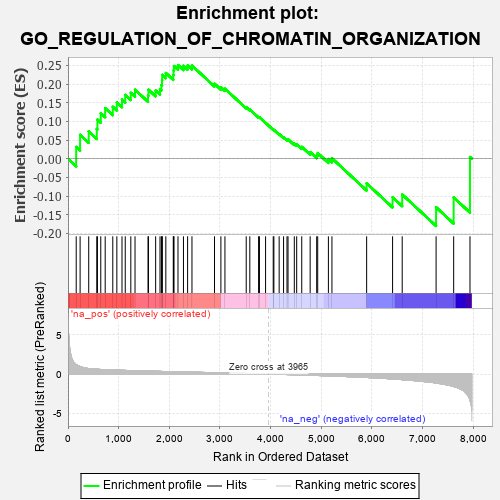
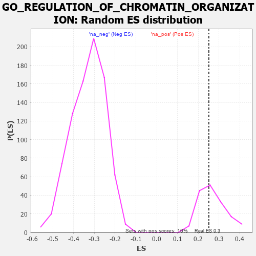

| | | Dataset | 7d |
| Phenotype | NoPhenotypeAvailable |
| Upregulated in class | na_pos |
| GeneSet | GO_REGULATION_OF_CHROMATIN_ORGANIZATION |
| Enrichment Score (ES) | 0.25106776 |
| Normalized Enrichment Score (NES) | 0.93004996 |
| Nominal p-value | 0.58641976 |
| FDR q-value | 0.8014389 |
| FWER p-Value | 1.0 |
Table: GSEA Results Summary

Fig 1: Enrichment plot: GO_REGULATION_OF_CHROMATIN_ORGANIZATION
Profile of the Running ES Score & Positions of GeneSet Members on the Rank Ordered List
| PROBE | GENE SYMBOL | GENE_TITLE | RANK IN GENE LIST | RANK METRIC SCORE | RUNNING ES | CORE ENRICHMENT | | 1 | SPI1 | | | 162 | 1.182 | 0.0317 | Yes |
| 2 | CDC45 | | | 239 | 0.950 | 0.0640 | Yes |
| 3 | EED | | | 409 | 0.690 | 0.0730 | Yes |
| 4 | HIRA | | | 568 | 0.608 | 0.0799 | Yes |
| 5 | CCNB1 | | | 581 | 0.601 | 0.1049 | Yes |
| 6 | NOC2L | | | 647 | 0.578 | 0.1221 | Yes |
| 7 | WDR61 | | | 734 | 0.549 | 0.1355 | Yes |
| 8 | PARG | | | 884 | 0.509 | 0.1391 | Yes |
| 9 | CTR9 | | | 964 | 0.492 | 0.1508 | Yes |
| 10 | WDR70 | | | 1066 | 0.470 | 0.1588 | Yes |
| 11 | KMT2A | | | 1130 | 0.458 | 0.1710 | Yes |
| 12 | KAT7 | | | 1240 | 0.440 | 0.1767 | Yes |
| 13 | SSRP1 | | | 1323 | 0.424 | 0.1850 | Yes |
| 14 | TADA3 | | | 1580 | 0.378 | 0.1693 | Yes |
| 15 | PAF1 | | | 1588 | 0.376 | 0.1850 | Yes |
| 16 | KMT2E | | | 1730 | 0.350 | 0.1827 | Yes |
| 17 | FMR1 | | | 1816 | 0.334 | 0.1866 | Yes |
| 18 | RTF1 | | | 1844 | 0.329 | 0.1978 | Yes |
| 19 | OTUB1 | | | 1857 | 0.326 | 0.2106 | Yes |
| 20 | SMAD4 | | | 1860 | 0.326 | 0.2247 | Yes |
| 21 | TASOR | | | 1931 | 0.316 | 0.2298 | Yes |
| 22 | KDM3A | | | 2078 | 0.294 | 0.2243 | Yes |
| 23 | SART3 | | | 2084 | 0.293 | 0.2366 | Yes |
| 24 | TAF7 | | | 2092 | 0.292 | 0.2486 | Yes |
| 25 | MORC2 | | | 2171 | 0.281 | 0.2511 | Yes |
| 26 | NSD3 | | | 2279 | 0.263 | 0.2491 | No |
| 27 | SIN3A | | | 2361 | 0.251 | 0.2500 | No |
| 28 | KDM1A | | | 2447 | 0.237 | 0.2497 | No |
| 29 | WDR5 | | | 2892 | 0.168 | 0.2010 | No |
| 30 | BRD7 | | | 3018 | 0.147 | 0.1917 | No |
| 31 | TLK1 | | | 3098 | 0.137 | 0.1877 | No |
| 32 | UBR5 | | | 3518 | 0.074 | 0.1381 | No |
| 33 | MAPK3 | | | 3589 | 0.062 | 0.1320 | No |
| 34 | SKI | | | 3762 | 0.032 | 0.1117 | No |
| 35 | NSD1 | | | 3779 | 0.031 | 0.1110 | No |
| 36 | NIPBL | | | 3900 | 0.010 | 0.0963 | No |
| 37 | ATG5 | | | 4051 | -0.016 | 0.0780 | No |
| 38 | TAL1 | | | 4064 | -0.018 | 0.0773 | No |
| 39 | GFI1 | | | 4168 | -0.037 | 0.0659 | No |
| 40 | PAX5 | | | 4255 | -0.051 | 0.0573 | No |
| 41 | CTBP1 | | | 4323 | -0.064 | 0.0517 | No |
| 42 | SETD5 | | | 4343 | -0.067 | 0.0522 | No |
| 43 | LRRK2 | | | 4467 | -0.087 | 0.0405 | No |
| 44 | SNW1 | | | 4514 | -0.096 | 0.0390 | No |
| 45 | GATA3 | | | 4614 | -0.120 | 0.0318 | No |
| 46 | WBP2 | | | 4780 | -0.153 | 0.0177 | No |
| 47 | TLK2 | | | 4909 | -0.179 | 0.0094 | No |
| 48 | ATRX | | | 4929 | -0.184 | 0.0151 | No |
| 49 | FLCN | | | 5140 | -0.235 | -0.0010 | No |
| 50 | ATM | | | 5210 | -0.249 | 0.0012 | No |
| 51 | SET | | | 5895 | -0.434 | -0.0661 | No |
| 52 | UBE2N | | | 6407 | -0.621 | -0.1032 | No |
| 53 | TPR | | | 6597 | -0.709 | -0.0959 | No |
| 54 | CDK9 | | | 7266 | -1.138 | -0.1301 | No |
| 55 | IWS1 | | | 7613 | -1.587 | -0.1038 | No |
| 56 | ARRB1 | | | 7935 | -3.377 | 0.0045 | No |
Table: GSEA details [plain text format]

Fig 2: GO_REGULATION_OF_CHROMATIN_ORGANIZATION: Random ES distribution
Gene set null distribution of ES for GO_REGULATION_OF_CHROMATIN_ORGANIZATION